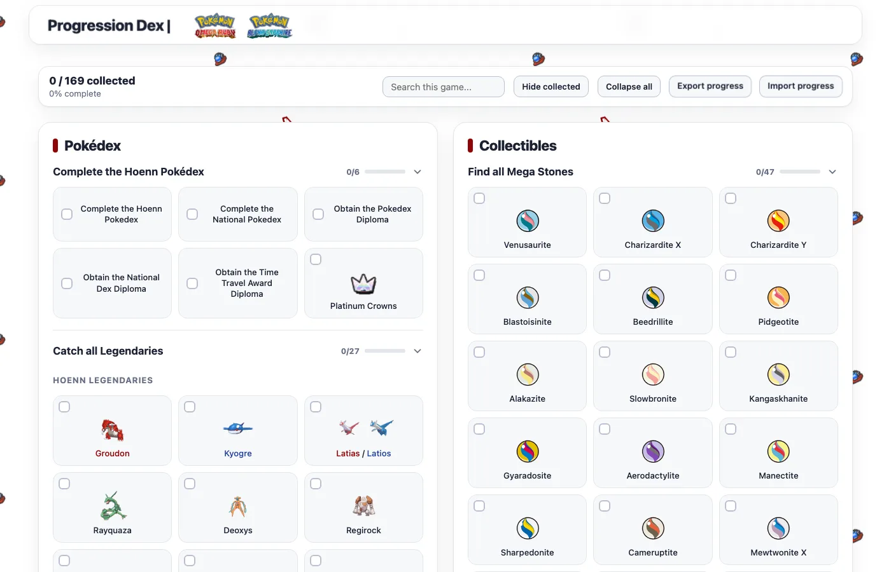

Track your 100% in every Pokémon game
Pick a game, tick off Pokémon, items, ribbons and more, and watch your progress fill up. Everything is saved in your browser.

Everything for a full completion run
Each game has its own checklist, colors and progress bar, so you always know what is left.
26 checklists
From Red and Blue to Scarlet and Violet, plus Pokémon Home: Pokédex, legendaries, mega stones, ribbons and more.
Live progress
Per-section counters, a progress bar and confetti when you hit 100%. Games show In Progress or Completed on the list.
Search and filter
Find any item instantly, hide what you already collected, and collapse sections you have finished.
Yours to keep
Progress lives in your browser. Export it to a file to back it up or move to another device.
Frequently asked questions
What is ProgressionDex?
ProgressionDex is a tool designed to help gamers track their 100% completion progress across various games, providing detailed insights and progress tracking capabilities.
Is ProgressionDex free?
Yes, ProgressionDex is completely free. Users can track progress, and manage their game completion journey without any costs.
Is the platform suitable for all users?
Yes, ProgressionDex has a user-friendly interface that makes it accessible for users of all experience levels.
How can I start using ProgressionDex?
Getting started is easy! Click “Choose your game”, select your game, and begin tracking your progress.
Where is my progress stored?
In your browser only. Use Export progress on any page to save a backup file, and Import progress to restore it.